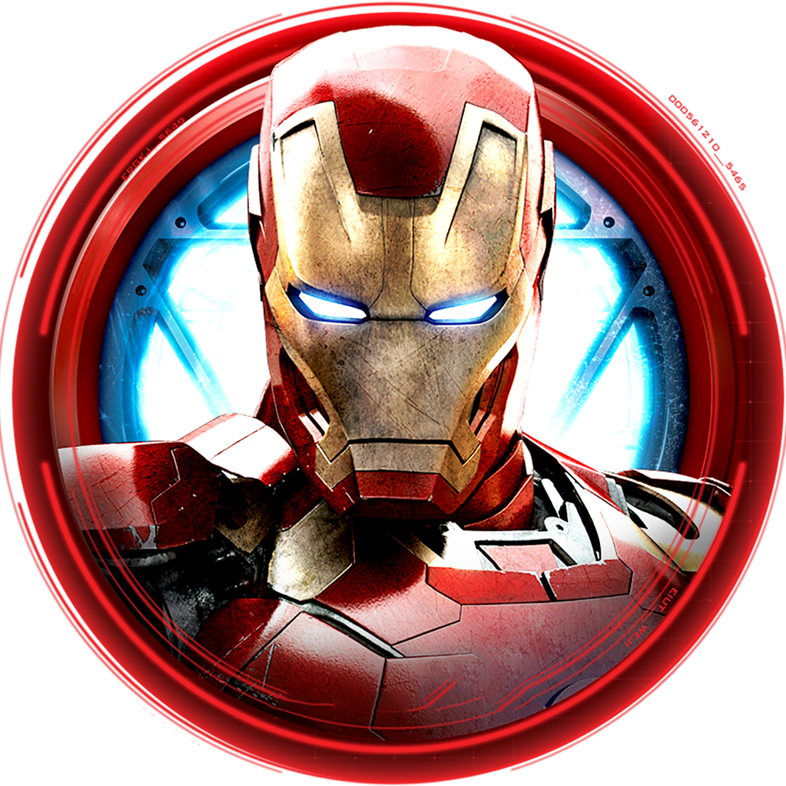

Press me

Anthony ''Tony'' Edward Stark aka Iron Man is the protagonist of the
Iron Man movie trilogy and the Infinity saga of the Marvel Cinematic
Universe.
He was the leader of the Avengers, worked with the
organization S.H.I.E.L.D. and headed the company Stark Industries,
which, after a fundamental rethink, no longer builds sophisticated
weapons, but generates clean electricity using arc reactor technology.
By his own admission, he is a "genius, billionaire, playboy and
philanthropist." He made Spider-Man an Avenger and was his mentor. Tony
died using the Infinity Stones to wipe out Thanos and his army and save
the world from extinction.